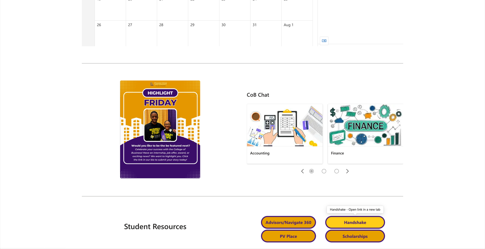
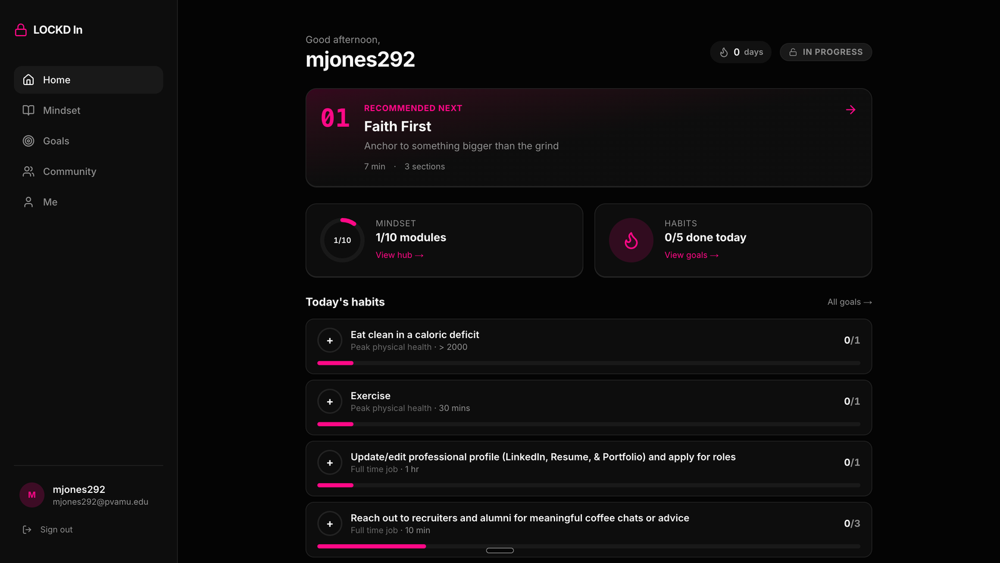
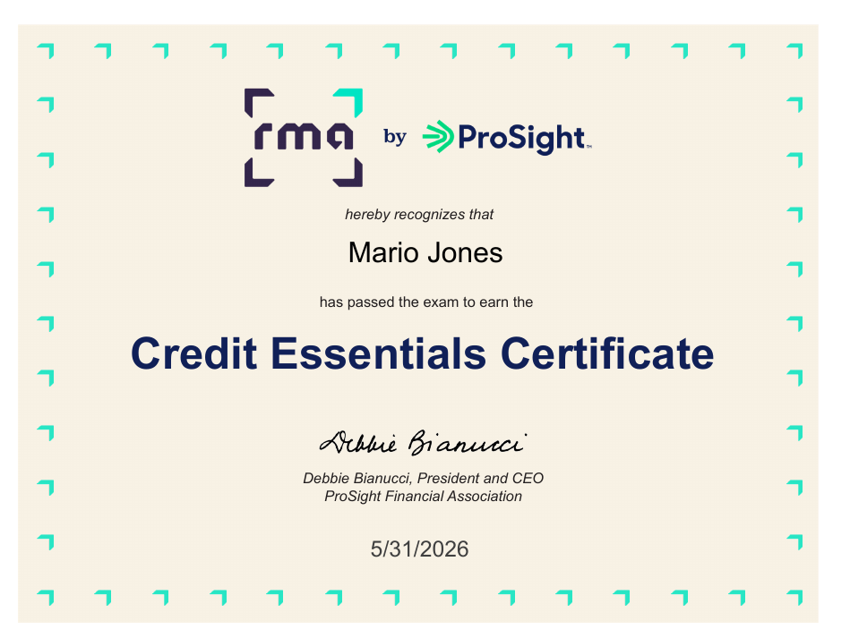
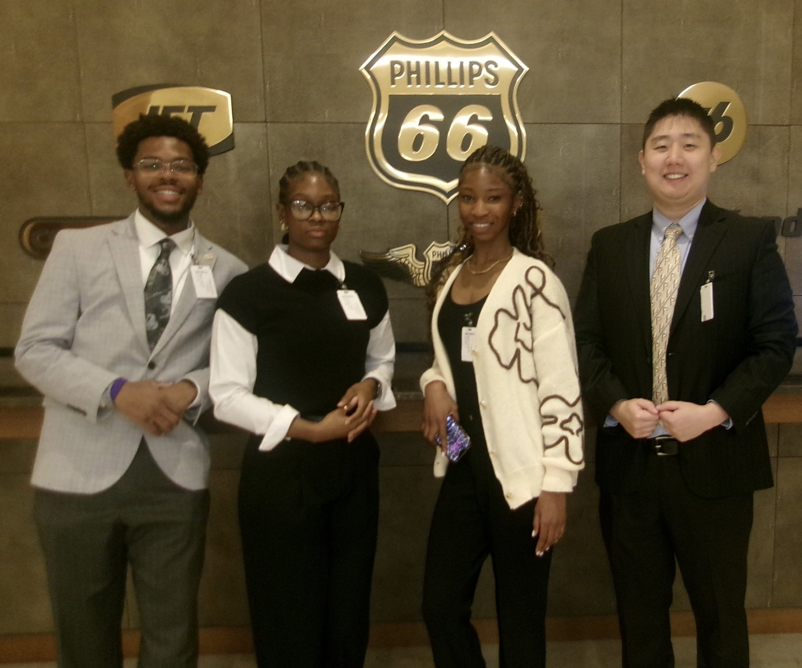
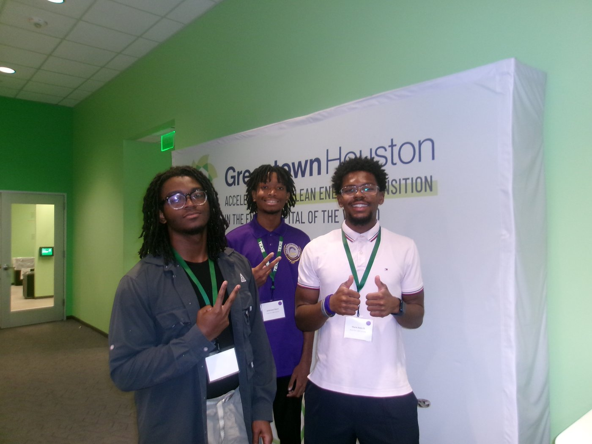
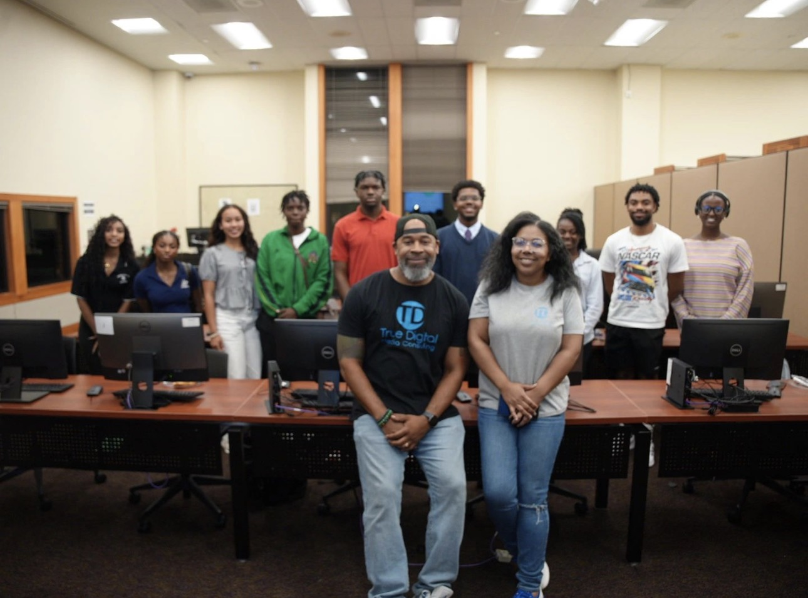

ACCOUNT HOLDER: MARIO JONES IIPRAIRIE VIEW A&M UNIVERSITY · B.B.A. MIS · GPA 3.3 · MAY 2027STATUS: OPEN TO OPPORTUNITIES ●
Businesses run on systems.
I build both.
I'm a Management Information Systems major working at the intersection of IT
operations, financial operations, and software: from leading a SharePoint & Teams
hub rollout for PVAMU's College of Business, to building TensorFlow analytics
pipelines, to founding a personal-development platform for college students.
College of Business Digital Hub | SharePoint & Teams
Identified a campus-wide visibility gap by scraping the school's event site with Python, surfacing organizations hosting events that never reached most students. Led the rollout of a centralized SharePoint & Teams hub for posting and tracking organization events, applying the full SDLC across design, testing, and deployment.
Built to WCAG AA accessibility standards and PVAMU brand
compliance ahead of college-wide deployment, broadening equitable access to
opportunities.
SharePointPythonSDLCWCAG AAMicrosoft 365

FIG 001 — Intranet homepage, College of Business
JE-002
2025–PRESENT
FOUNDER
LOCKD In | Personal Development Platform
Founder of a platform built for college students to lock in on their goals, combining goal and habit tracking, guided mindset modules, streaks, and community service event hubs in one place. Built a working MVP in VS Code with Firebase, owning product direction, design, and the build; full production kicks off in fall 2026.
Product DesignFull-StackFirebaseEntrepreneurship

FIG 002 — LOCKD In dashboard, pre-launch build
JE-003
JAN 2026–PRESENT
DATA · ML
Predictive Analytics Pipeline
Engineered an automated end-to-end Python pipeline that validates live data via external APIs and feeds a TensorFlow regression model, improving predictive precision by 15%. The reporting layer applies all four types of analytics: descriptive, diagnostic, predictive, and prescriptive, to turn raw data into decision-ready recommendations.
Led a team through a 72-hour sprint, documenting and assisting in executing the technical prototyping of an AI + IoT monitoring system from scratch with Python, Raspberry Pi, and Arduino, applying machine learning models and anomaly detection algorithms to enable predictive analytics, then delivering the executive-level presentation.
This site is hand-coded in HTML/CSS, deployed on GitHub Pages, and built around a custom "ledger" design system that reflects my background in accounting and financial operations. No frameworks, no templates.
Surfaced a campus-wide event visibility gap by scraping the school's event site with Python, then led the SharePoint & Teams hub rollout that closed it (see JE-001).
Configured secure access provisioning and administered systems access for student leadership.
Provide hands-on IT support across College of Business facilities, including classroom AV verification, hardware repair and testing, software deployment, and endpoint readiness.
JUL 2025
Project Intern | Business Analysis
Kevin Kelley Concepts · Dallas, TX
Synthesized market feasibility, demographic, and zoning research into a data-backed business case, reporting directly to the leadership board.
JAN 2019 — PRESENT
Financial Operations Assistant
Jones & Jones Strategic Consulting · Frisco, TX
Attained 100% audit-readiness across consulting engagements by managing complex financial records and maintaining regulatory and compliance standards.
Reduced annual tax-reporting turnaround from 3 days to under 4 hours by architecting custom Excel models using artificial intellegence that automated data reconciliation and compliance reporting.
ONGOING
Campus Leadership
Prairie View A&M University
President, Beta Alpha Psi — leading the honors organization for accounting, finance, and information systems students.
Director of IT, PVAMU Strategy Group.
Co-Chaplain, The B.E.A.U.X. of Prairie View.
Member, Dean's Student Advisory Council.
Active in AIS, NSBE, ColorStack, Scholars of Finance, and NSLS.
Skills on the Books
FOLIO 03 · AUDITED
Languages
Python
Java
C#
SQL
HTML / CSS
Data & Analytics
TensorFlow
Power BI
Tableau
Excel (advanced modeling)
Platforms & Tools
Microsoft 365 & SharePoint
Teams
Git & GitHub
Firebase
Google Cloud
Business & Concepts
SDLC
ERP fundamentals
Networking
Credit analysis (RMA certified)
Compliance & audit readiness
Supporting Documents
FOLIO 04 · EXHIBITS

EXHIBIT A — RMA Credit Essentials Certificate · May 2026

EXHIBIT B — Phillips 66 BEN Case Competition '25 · Refinery capital investment analysis across upstream, midstream & downstream operations

EXHIBIT C — TEX-E Bootcamp '25 · Disciplined Entrepreneurship with MIT faculty & Greentown Labs; pitched a climate-tech solution

EXHIBIT D — True Digital Marketing C.A.S.E. Competition '25 · Business development lifecycle, venture pitch to industry professionals
.footer-section {
background-color: #FFFFFF;
color: #0F172A; /* High-contrast dark text */
border-top: 4px solid #06B6D4; /* Thick technical teal rule bar */
padding: 4rem 2rem;
}
.footer-links a {
color: #06B6D4; /* Teal links on white canvas have perfect contrast */
}